СВАРКА И ИНСТРУМЕНТЫ
ТОЧЕЧНАЯ СВАРКА
ОБЩЕЕ ОПИСАНИЕ
Точечная
сварка (точечная контактная сварка) - наиболее подходящий метод сварки
при ремонте автомобилей. Она имеет три основных достоинства: сварка
может осуществляться мгновенно, оказывает очень малое влияние на
исходный материал, деформации сводятся к абсолютному минимуму. Однако
помните, что для надежной сварки необходимо полностью удалить с
поверхности свариваемого материала краску и другие загрязнения.
РЕЖИМ СВАРКИ
- Толщина листа и минимальный шаг сварки
- Толщина листа и диаметр наконечника
При
точечной сварке строго соблюдайте требования к току, времени сварки,
давлению сварки, времени удержания и времени отключения для данного
сварочного аппарата.
При сварке учитывайте следующие факторы:
Примечание: При слишком малом шаге сварки возникает ветвление тока, что снижает надежность сварки.
|
Толщина листа
|
0,6 мм
|
0,9 мм
|
1,2 мм
|
1,6 мм
|
|
Минимальные интервалы
|
11 мм
|
16 мм
|
20 мм
|
24 мм
|
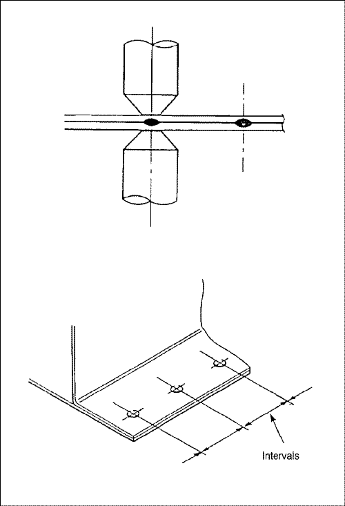


|
Толщина листа
|
0,6 мм
|
0,9 мм
|
1,2 мм
|
1,6 мм
|
|
Минимальные интервалы
|
4.5Ø
|
5.0Ø
|
5.5Ø
|
6.0Ø
|


ПРОВЕРКА ПРОЧНОСТИ СВАРКИ
- Если в стальных листах образуются отверстия, это свидетельствует о достаточной прочности сварки.
- Вбейте клин между двумя панелями рядом с точкой сварки. Если сваренные детали не расходятся и видимый диаметр сварной точки больше 3 мм, качество сварки удовлетворительное.
- Если невозможно очистить свариваемые поверхности от ржавчины или краски.
- Если в свариваемую деталь невозможно ввести наконечник сварочного аппарата.
- Если свариваемые поверхности видны снаружи и сварка может ухудшить внешний вид машины.
Даже
если сварка производится в соответствии с требованиями, прочность
сваренных участков может существенно меняться в результате снижения
напряжения и других факторов. Качество сварки нельзя оценить без
разрушения сваренного участка.
Возьмите стальной лист той же толщины и проведите испытание на разрыв.
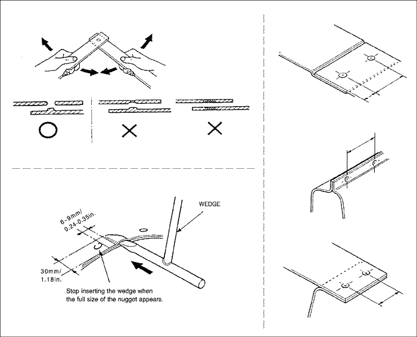


Примечание: В некоторых ситуациях использовать точечную сварку затруднительно:
Во
всех этих случаях рекомендуется использовать газовую сварку. Однако
если точечная сварка неприменима из-за невозможности доступа, возможно
использование сварки электрозаклепками. При этом свариваемые участки
должны прилегать один к другому.
ГАЗОВАЯ СВАРКА
Газовая
сварка незаменима при ремонте кузова в силу того, что она имеет
широчайший диапазон возможностей - от соединения панелей кузова, резки
конструкции кузова и прогрева до восстановления формы панелей; кроме
того, оборудование для газовой сварки легко доступно.
Однако этот метод требует опыта.
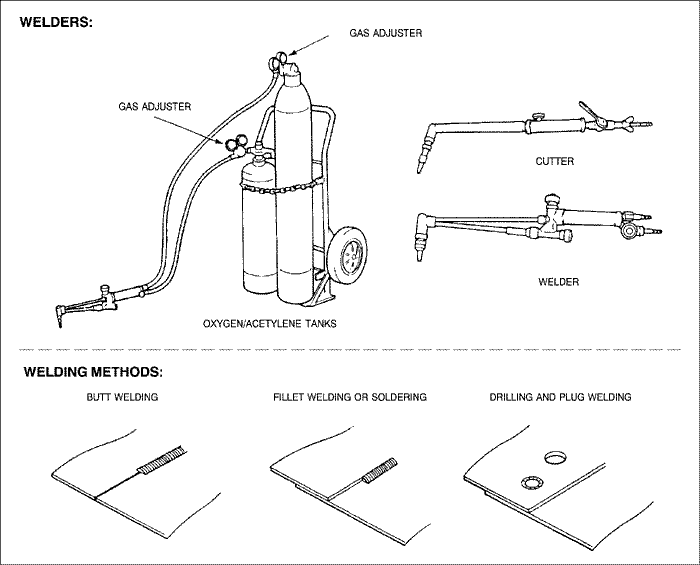

Примечание: Ниже приведены примеры того, как не надо использовать газовую сварку. Избегайте подобных действий.
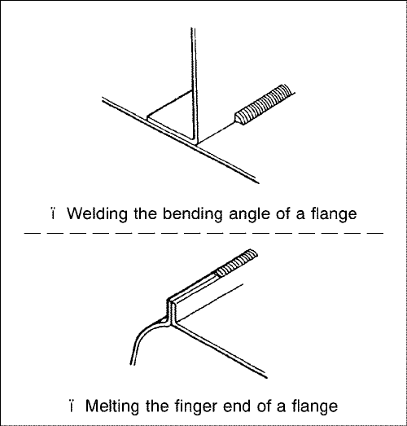

АППАРАТ ДЛЯ ЭЛЕКТРОДУГОВОЙ СВАРКИ В СРЕДЕ УГЛЕКИСЛОГО ГАЗА (ЭЛЕКТРОДУГОВАЯ СВАРКА МИГ)
В
этом процессе в качестве защитного газа вместо дорогого инертного газа
используется недорогой диоксид углерода. Используются плавящиеся
металлические электроды. Этот метод имеет широкий диапазон применений,
включая сварку тонкого листа встык, сварку угловых швов, пробочную
сварку и точечную сварку. Он также отличается высокой стабильностью
прочности сварки.
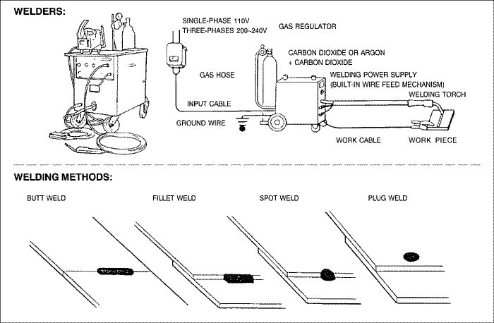

ИНСТРУМЕНТЫ ДЛЯ РЕМОНТА
|
Тип
|
Работа
|
Используемые инструменты и оборудование
|
|
Защитные средства
|
Оператор
|
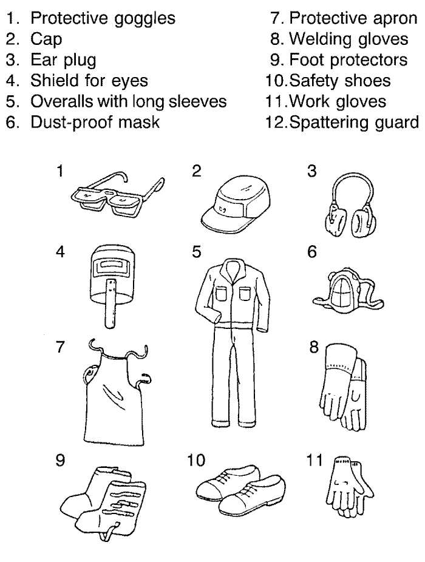 
|
|
Кузов автомобиля
|
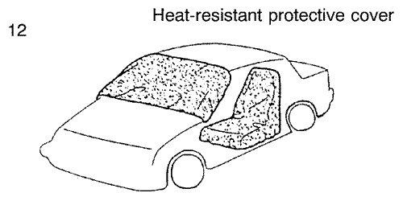 
|
|
|
Технологический инструмент
|
Отверстие под пробку,
высверливание
|
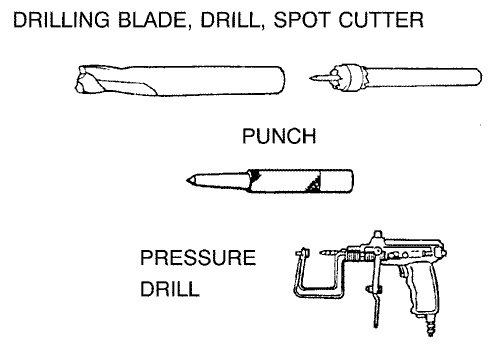 
|
|
Крепежные приспособления
|
Крепление основного металла
|
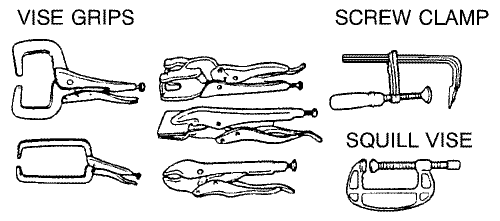 
|
|
Инструменты для формовки
|
Восстановление формы панелей обшивки
|
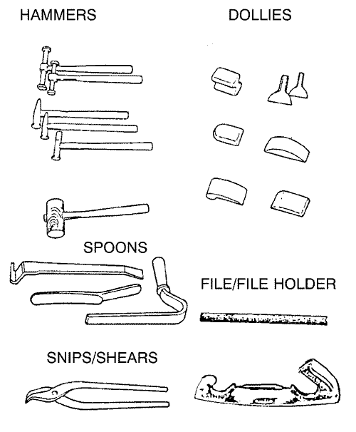 
|
|
Восстановление формы кузова и каркаса
|
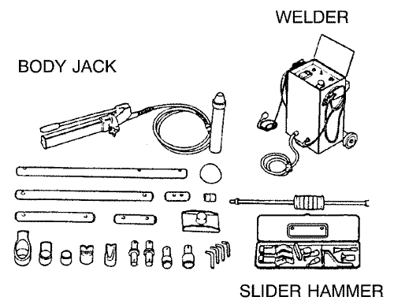 
|
|
|
Измерительный инструмент
|
Измерение
|
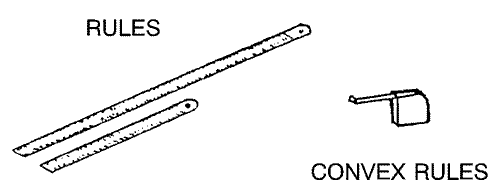 
|
|
Фланцевый инструмент
|
Подготовка кромок
|
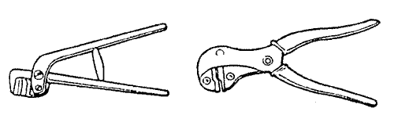 
|
|
Режущий инструмент
|
.
|
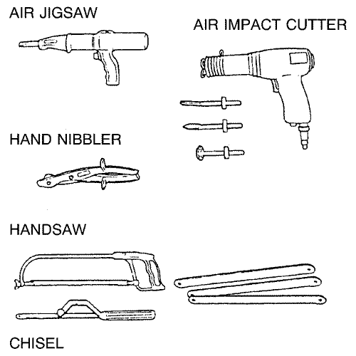 
|
|
Инструмент для зачистки
|
Зачистка
|
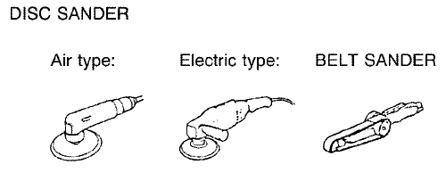 
|